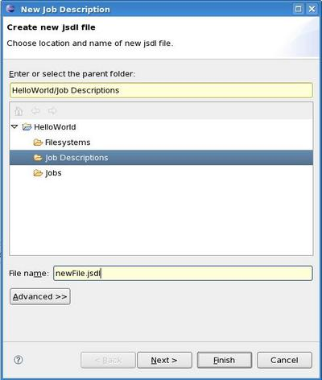
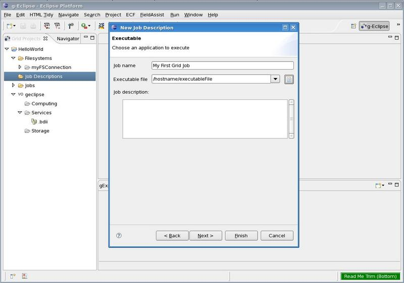
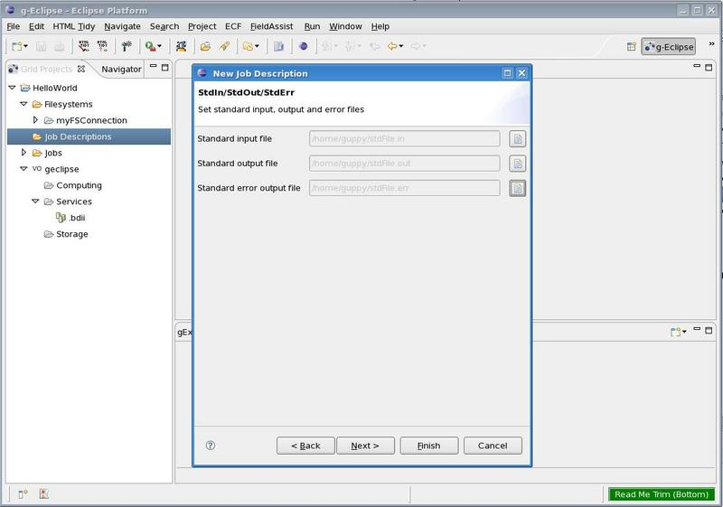
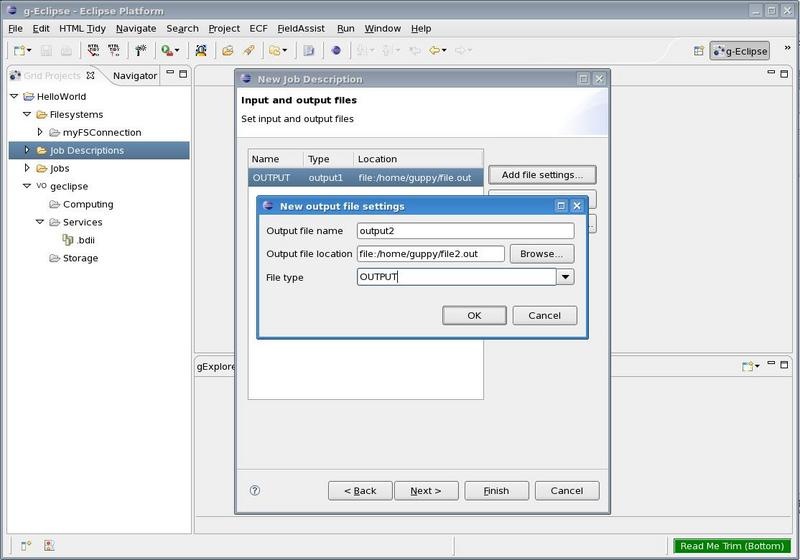

g-Eclipse - Creating a Job
In order to submit a job to the Grid, you first need a file that
describes your job with vital information such as the name of the executable, the input and output
parameters, etc. This file is usually in the Job Submission Description
Language (JSDL). As composing this manually is laborious and time consuming,
you can use the g-Eclipse Grid Job Wizard to create such a file.
Go to
 File > New > Job Description.
(Alternatively, you could right-click into the Grid Project View and choose New > Job Description.)
A dialog opens up where you can specify the name of the job description file you are about to create
and where you would like to save it. Choose the Job Description folder of your Grid Project and
type in the name you would like to give your jsdl file.
File > New > Job Description.
(Alternatively, you could right-click into the Grid Project View and choose New > Job Description.)
A dialog opens up where you can specify the name of the job description file you are about to create
and where you would like to save it. Choose the Job Description folder of your Grid Project and
type in the name you would like to give your jsdl file.

Clicking Next will take you to a page where you can identify your job and its application by name,
and choose the executable you would like to run. You can also give your job a short description.

Clicking Next will take you to a page where you can choose the location of standard input (stdin),
output (stout) and error (stderr) files. Click Add file... to choose a file to add to the list.
If your executable requires no input, leave the list empty and press Next to continue.

On the next screen you can specify input and output files required by your executable. You can specify
multiple output files with associated settings.

Clicking Next will show you a screen where you can specify the Operating System, Architecture
and Candidate Execution Hosts required for your job. On the screen that follows, you can specify still more
details of resources such as Total CPU Speed, Total CPU count and Total Physical Memory.
Clicking Finish completes the wizard and you can see your new
jsdl file in the Job Description folder in your Grid Project.
Back to Getting Started
Continue to Submit a Job